Lumen adl for Tokyo Prestige · November 2026
The same cars, prices and facts, shown four ways. Each direction answers a different finding from the research, so the choice is about which buyer the site should put first.
Every car, price and figure shown is from tokyoprestige.com.au, read 11 Nov 2026. B, C and D are static mock-ups of two screens; A is the working site.
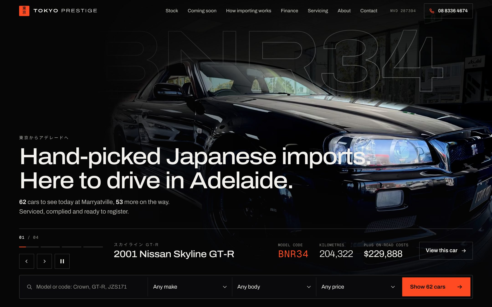
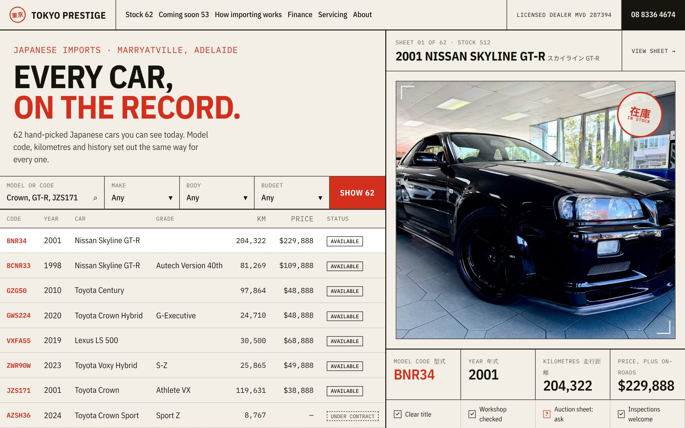
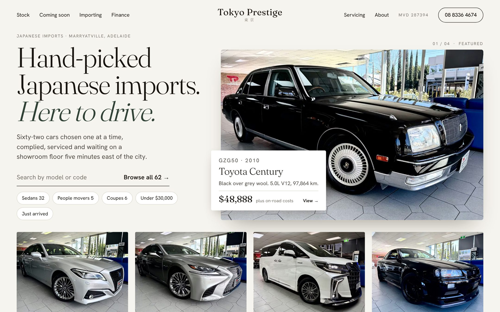
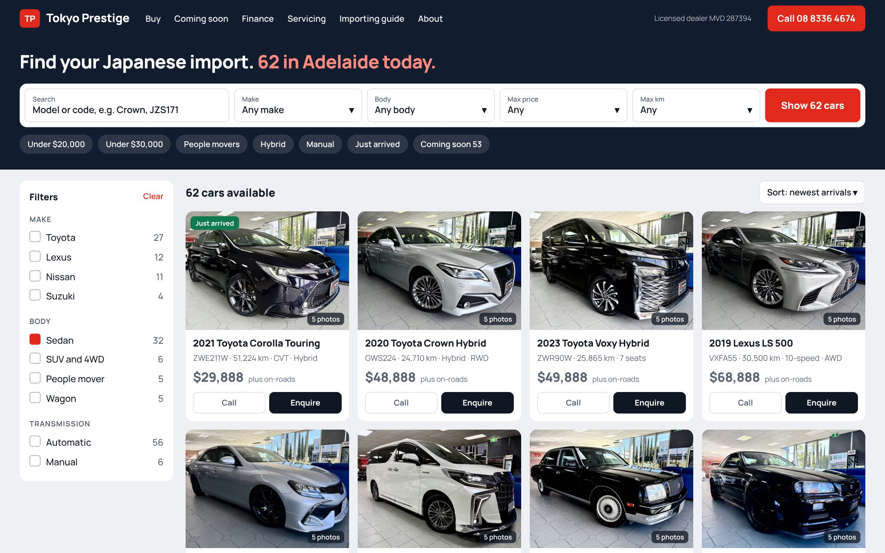
Their own photos with the lights turned down: the room falls to near black and the car stays lit, with its model code set large behind it. The page reads like a spec plate.
The enthusiast and the luxury buyer. It makes a $229,888 GT-R and a $29,888 Corolla both look looked-after.
Premium sites win by restraint (Classic Throttle Shop, Porsche, Polestar). No dealer site we found has purposeful motion or a clean first phone screen with the car, the search and one action.
Archivo, wide. Geist Mono for codes.
Homepage, desktop
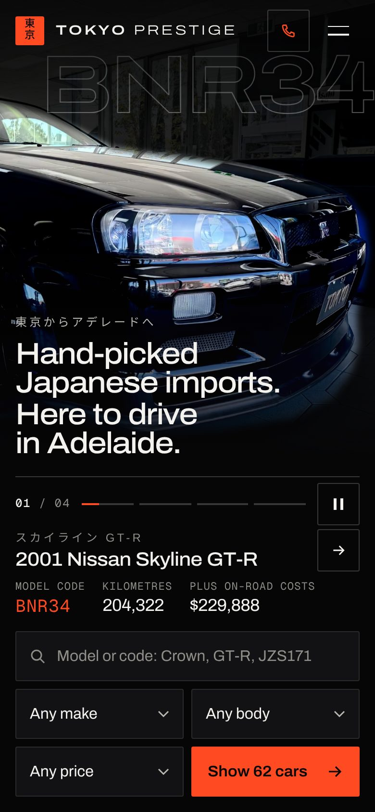
Homepage
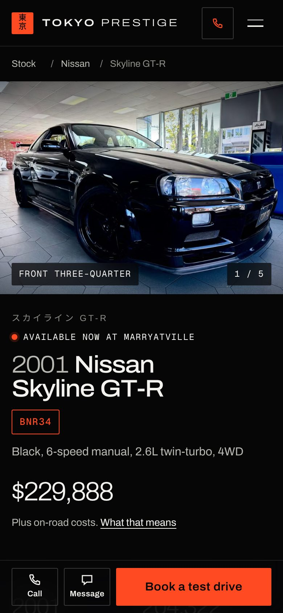
Car page
The whole site borrows the form of a Japanese auction sheet: warm paper, ruled boxes, monospaced data and a red seal for status. The stock is a table you can scan, not a wall of cards.
The wary buyer and the enthusiast who searches by chassis code. It says “nothing hidden” before a word is read.
The top buyer fear is odometer and history fraud; “if the dealer can't show you the auction sheet, walk away”. No dealer site structures proof. BE FORWARD alone filters by model code.
IBM Plex Sans Condensed. IBM Plex Mono.
Homepage, desktop
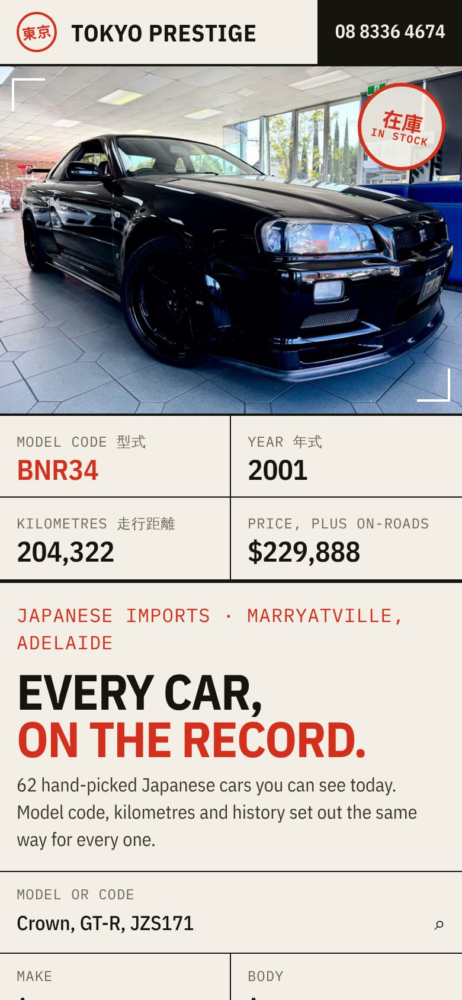
Homepage
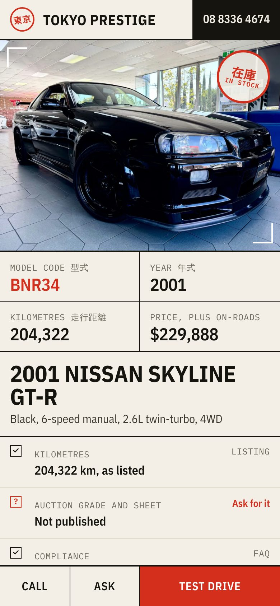
Car page
Light, calm and editorial. A serif headline, generous space, and one featured car at a time with a label like an exhibit card. The opposite of a car yard.
The luxury-for-less buyer comparing a Crown or an LS with a new mid-range car, and anyone put off by “JDM” styling.
Classic Throttle Shop and Romans International feel premium through light type, uniform photos and space. Buyers of Crowns and Lexus talk about condition and comfort, not heritage.
Fraunces, light. Hanken Grotesk.
Homepage, desktop
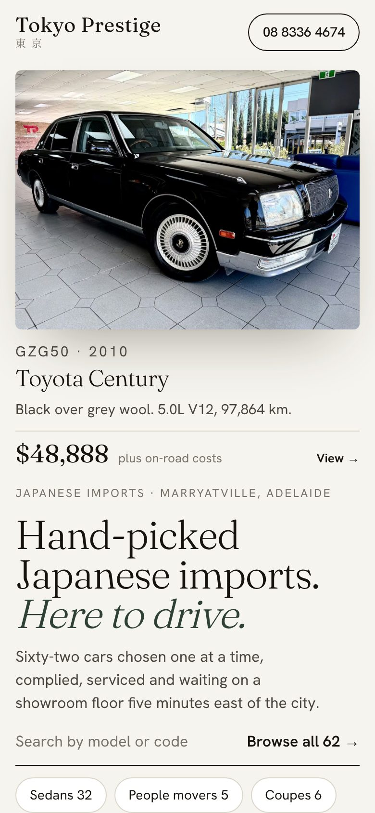
Homepage
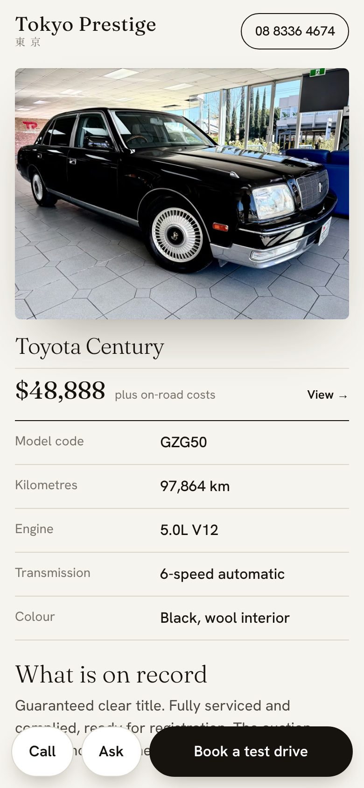
Car page
A marketplace layout. No hero image: the search, quick filters and the first eight cars with prices are all on the first screen, with Call and Enquire on every card.
The family and budget buyer who arrives from Carsales or Facebook with a price in mind and wants to compare quickly.
Autotrader and AutoProject lead with search, a live count and price. On Tokyo Prestige's current phone homepage the first price is 8,070px down, and every filter on the stock page is empty.
Manrope, bold.
Homepage, desktop
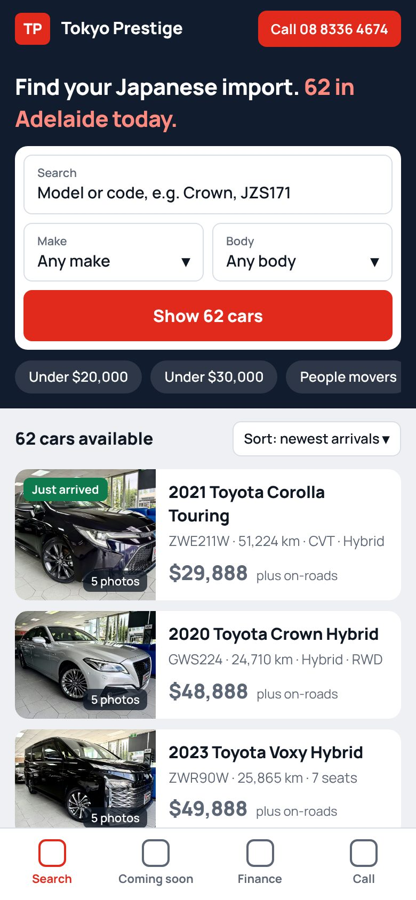
Homepage
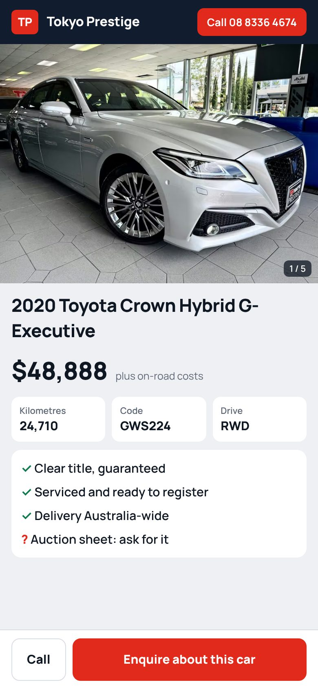
Car page
Side by side
| A · Showroom at night | B · The record | C · The gallery | D · Find it fast | |
|---|---|---|---|---|
| First impression | Cinematic, expensive | Exact, trustworthy | Calm, refined | Practical, familiar |
| Buyer it favours | Enthusiast, luxury | Wary buyer, enthusiast | Luxury-for-less, family | Family, budget |
| Layout | Full-screen showcase, search docked below | Split sheet: stock table and one car's record | Headline beside one framed car | Search bar, filter rail, card grid |
| Taps to a car with a price | 0 (featured car), 1 to the list | 0 (eight in the table) | 0 (five shown) | 0 (eight cards) |
| Works with today's photos | Yes: the room is darkened | Yes: photos are small | Partly: backgrounds show | Yes: photos are small |
| Needs from the dealer | Nothing new | Auction sheets, to deliver on its promise | Cleaner photography | Nothing new |
| Stands apart from competitors | Most | Strongly | Moderately | Least |
A is the one the owner will remember and it flatters the stock they have photographed today. Its car page already carries B's idea (the “what is on record” panel with a source for each line). If the dealer starts publishing auction sheets, that panel can grow toward B without a redesign.
C is the safer choice for a buyer base that is mostly Crowns, Lexus and people movers, but it should wait for better photos. D would be the quickest to build and the easiest to use, and the least likely to win the project on looks. A light theme of A is also possible: the layout and motion stay, the palette changes.